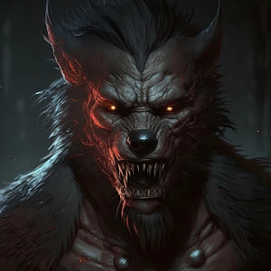
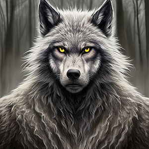

These are the heretics. Those who have strayed from the pack, those who have strayed from the
good graces of Father Wolf and Mother Luna. Those who have in turn falleb from the good graces
of the Spirit Claw tribe. Do not associate with them. Do not talk to them. Do not help them in
any way lest you be accused of being in league with them. If you are aware of their presence and
not fighting against them then you are negative contracting with them. You are dishonoring
Father Wolf and Mother Luna as well.
When you see these wolfs it is an S.O.S. - smash on sight.
Bedlam

This Lycan has forsaken and disavowed Father Wolf and Mother Luna by taking a vow with unclean
spirits for gifts that make him very powerful. For one, he can shift his whole being into
inanimate objects and only certain parts of his body as well, which can make him hard to locate
at times. We
are not sure when those powers of his go into effect, but they are cyclical like the different
shitfs of a werewolf. He must be brought to the Spirit Claw tribe for justice. If necessary,
kill him. You will not be judged.
Discordio

Discordio must be turned over to the Spirit Claw tribe for judgment. In his over reaching
advances to become an alpha wolf when he shifts, he has tried to over throw every established
form of order that Father Wolf and Mother Luna has put in place for their lycans. Bring him to
the Spirit Claw tribe. Alive preferrably.